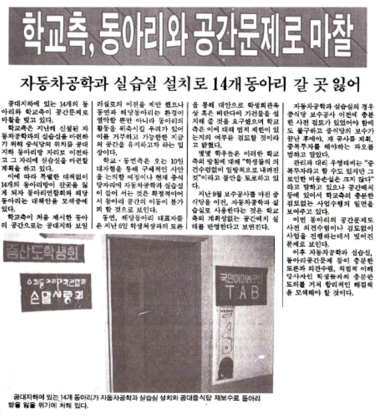
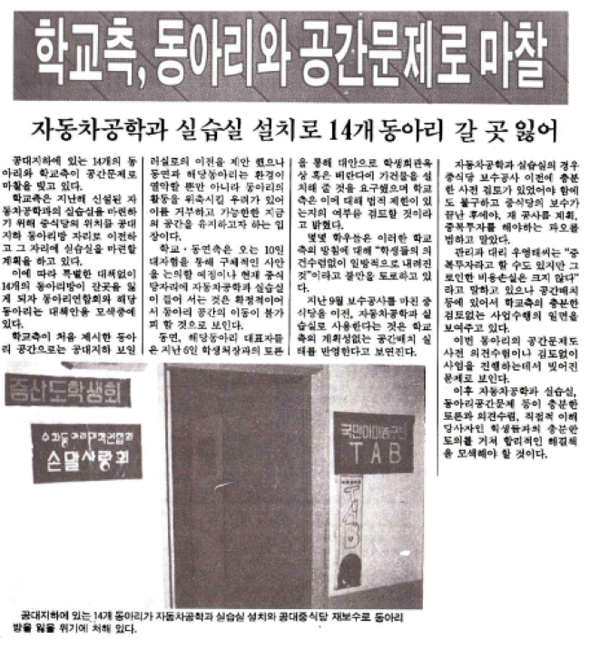

30년 전, 국민대학교에 무슨 일이 있었는지 함께 보실까요?
1. 제25대 학생회 건설 (1992.11.9. 국민대학보)
1992년 11월에는 제25대 총학생회가 건설되었습니다.
선거 개표 결과 기호 1번 정: 권혁기(국사·3), 부: 오치구(경제·4) 군이 총학생회장과 부총학생회장으로 당선되었습니다.
개표 결과 총 유권자 수 6,803명 중 4,928명(72.4%)이 투표하여 기호 1번 후보가 1,287표(26.1%)를 얻었고 기호 4번 정 : 황명선(토목·3), 부 : 김세종(경영·3)후보가 1,262표(25.6%)를 얻어 25표 차이로 총학생회장에 당선되었다고 합니다.
2. 학교 측, 동아리와 공간 문제로 마찰 (1992.11.9. 국민대학보)
공대 지하에 있는 14개의 동아리와 학교 측이 공간문제로 마찰을 빚고 있었다고 합니다.
학교 측은 지난해 신설된 자동차공학과의 실습실을 마련하기 위해 중식당의 위치를 공대 지하 동아리방 자리로 이전하고, 그 자리에 실습실을 마련할 계획이었습니다.
이 때문에 14개의 동아리방이갈 곳을 잃게 되자 동아리연합회와 해당 동아리는 대책 안을 모색했습니다.
3. 등록금 예고제, 등조위 규정 둘러싸고 논란 (1992.11.23. 국민대학보)
93학년도 신입생 모집요강에 명시된 등록금 예고제 실시 여부를 놓고 학교 측과 학생 측의 입장이 첨예하게 대립되었습니다.
등록금을 미리 예고하는 제도인 등록금 예고제에 대해 학교측의 ‘1년 예산을 효율적으로 사용하기 위한 제도’라는 입장과, 학생측의 ‘학생들의 의사를 무시한 채 등록금 인상을 학교 측에서 일방적으로 결정하려는 의도’라는 입장이 맞서기도 했습니다.
한편 학교 측에 의해 16% 인상된 각 계열별 신입생 등록금은 다음과 같습니다.
○ 인문·사회계: 1,437,000원
○ 이학·체육계: 1,585,000원
○ 공학·예능계: 1,724,000원
4. 학내 대선 준비 본격 돌입 (1992.11.30. 국민대학보)
12월 18일(금)로 결정된 대통령 선거일을 20일 정도 남기고 있는 가운데 총학생회를 비롯, 민중대통령 선거운동본부 측에서는 본격적인 대선 준비에 돌입하였습니다.
각 단위에서는 그동안 학생회 선거로 인해 소홀이 했던 대선에 대한 분위기를 확산시키고 대선 공간 속으로 학우들의 참여를 이끌어 내는데 주요 목표를 두면서, 공정선거 감시단 모집과 민중대통령 후보선거자금지원을 위한 재정확보 사업 등을 벌였습니다.
5. 총대의원회 자체 견제 방법 없어 (1992.11.30. 국민대학보)
총대의원회는 일종의 학생자치기구의 견제를 위한 기구로, 학생회가 본연의 역할을 수행하기 위해서, 그 속에서 옳지 않은 부분을 지적하기 위해서 상설화 된 기구입니다.
하지만 다른 학생회를 견제하는 데에 비하여, 스스로는 자체 인준 및 자체 감사를 통하여 활동하고 있었습니다. 또한 평상시의 활동은 물론 예산의 쓰임도 공개되지 않았는데요.
이러한 상황은 특수기구가 상설기구화 되면서 나타나는 문제이며, 학생회 전반에 나타나는 문제 뿐 아니라 그 이면에 있는 이러한 문제에도 눈을 돌리는 등 대안을 모색하자는 이야기가 나왔다고 합니다.
지금까지 30년 전 국민대학교 역사 기록을 살펴보셨는데요! 재밌게 보셨나요?
앞으로 더욱 흥미로운 내용으로 찾아 뵐 테니, 많은 관심 부탁드립니다!
국민대학교의 기록물이 궁금하시다면 언제든지 기록물관리위원회를 찾아주세요 :)